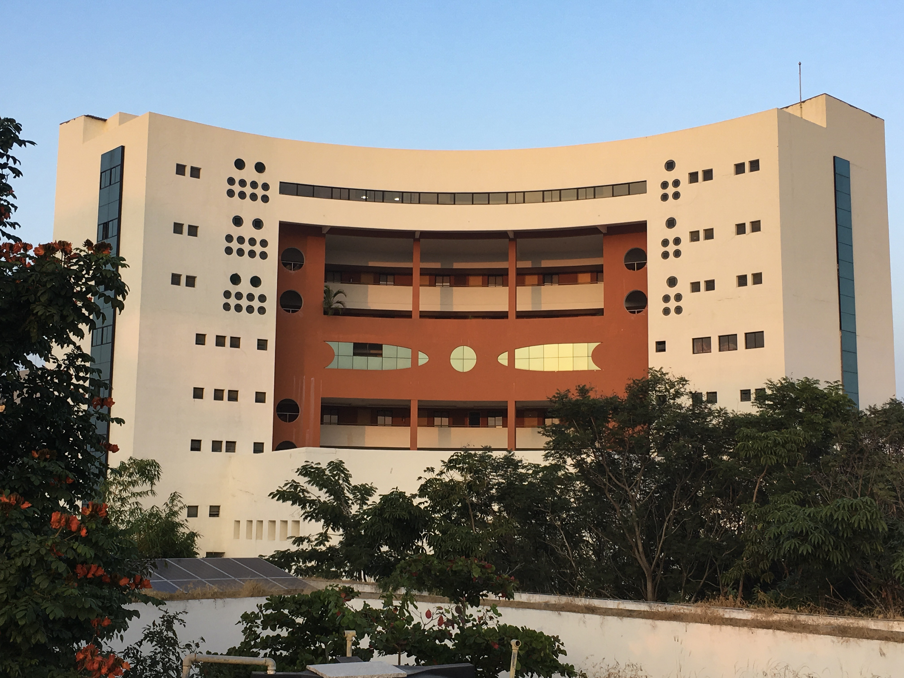

CMI has made significant contributions to India’s scientific manpower. CMI graduates are now faculty members at premier institutions such as IITs, IISERs, IMSc and CMI, as well as researchers in organizations such as Microsoft Research India.
In recent years, CMI students have taken up careers in sectors that require strong background in mathematics, statistics, computing and machine learning. For instance, they are successfully working in the roles of market liquidity and risk management analysts in finance companies, data scientists in marketing research firms and also research scientists in the R&D sector.
CMI invites representatives from the industry to conduct interviews and select students for offering permanent jobs and internships.
Curriculum
The programmes offered in CMI are listed below
- BSc
- MSc
- PhD
Depending on their interests, students from any of the above programmes may take up corporate jobs.
Placement Statistics
Campus interviews are being conducted in CMI for several years now. Some of the major recruiters are Credit-Suisse, Enst & Young, TRDDC
| Year | Maximum Offer | Average | Median |
|---|---|---|---|
| 2017-18 | 20 lacs | 12.67 lacs | 11.70 lacs |
| 2016-17 | 13.50 lacs | 9.75 lacs | 9.50 lacs |
| 2015-16 | 12.50 lacs | 8.75 lacs | 8.50 lacs |
| 2014-15 | 9.25 lacs | 7.75 lacs | 7.50 lacs |
Corporate and Industrial Relationships
CMI has taken active steps to engage with industry in areas related to mathematical sciences.
CMI currently has an active R&D collaboration in the area of large scale formal verification with the TRDDC, Pune. CMI is also working with Honeywell Technologies on verification of avionics software.
In 2015, CMI set up a separate society called Algolabs to foster interaction with industry, notably in the area of analytics, and optimization. Algolabs has conducted numerous short-term training programmes in machine learning, including in-house training for organizations such as Cognizant, Global Analytics, MRF and Tech Mahindra. In addition, Algolabs has undertaken projects in several areas related to analytics and machine learning. The goal is to make Algolabs the first choice of solution provider for any industrial problem requiring computational and analytical insight.
Some of the CMI graduates have created startups.
- Indraneel Mukherjee (BSc 2006)...
- Sourasis Roy (BSc 2005, MSc 2007)...
- Pratish Gandhi (BSc 2010, MSc 2013)...
Faculty
The faculty at CMI are selected carefully based on their research performance, feedback from existing faculty and from leading researchers around the world. They are committed to imparting the best education to the students and are experts in their field of research. Profile summaries of some of the prominent faculty members are listed below.
Rajeeva Karandhikar
Madhavan Mukund
KG Arun
Academic Calendar
| August - November | Semester I |
| January - April | Semester II |